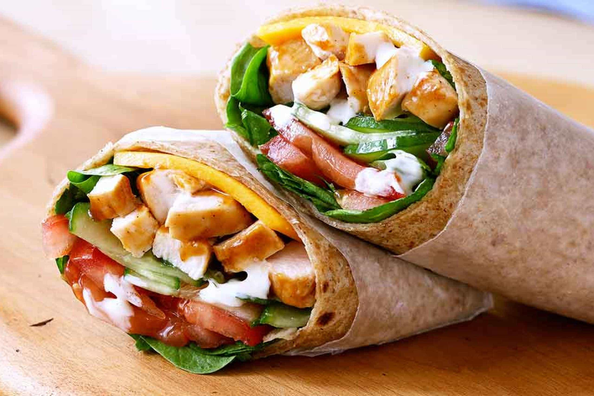

Chicken Wrap Recipe

Chicken wraps are one of the easiest and quickest meals that can be made for lunch or dinner.
It is also one of the few recipes that can be prepared using leftover chicken. All you need is cooked chicken, some vegetables and spices, a favourite spread and a tortilla.
INGREDIENTS
For The Chicken
- 200 gms Chicken Thighs cut into small cubes
- ½ tsp turmeric powder
- ½ tsp Red Chili Powder
- ¼ tsp pepper powder
- ¼ tsp Cumin Powder
- ¼ tsp garam masala
- salt to taste
- ¼ cup onion sliced
- 1 tsp oil
For The Wrap
- 2 Roti or Tortilla
- Cucumber Ranch or any spread of your choice
- ½ cup lettuce sliced
- ¼ cup onion sliced
- 1 cucumber sliced
DIRECTIONS :
- Take a pan and let it heat over medium flame. Put the tortilla on it and half cook it until it is slightly crispy. Set it aside.
- Take a pan and heat some oil in it. When the oil is hot, add the chicken cubes or shredded chicken to the pan. Sauté them for a minute. Then add the powdered spices such as turmeric powder, red chilli powder, pepper powder, cumin powder, garam masala and salt. Sprinkle water to cook the chicken.
- Take the cooked tortilla and add the chicken mixture at the centre. Then add the cucumber ranch, lettuce, onion and cucumber slices. Roll it tight in a foil and enjoy with ketchup or your favourite dip.